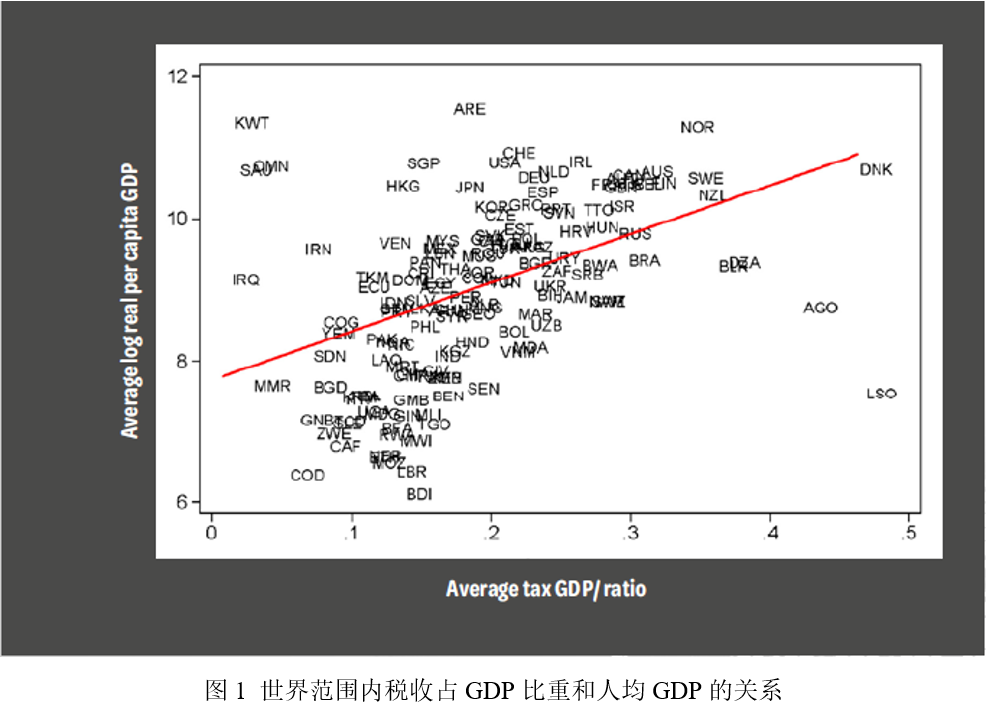
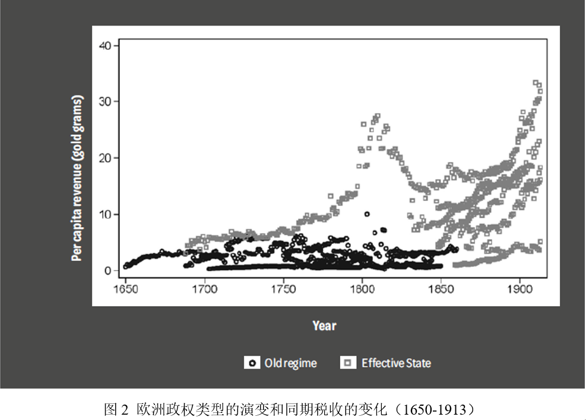
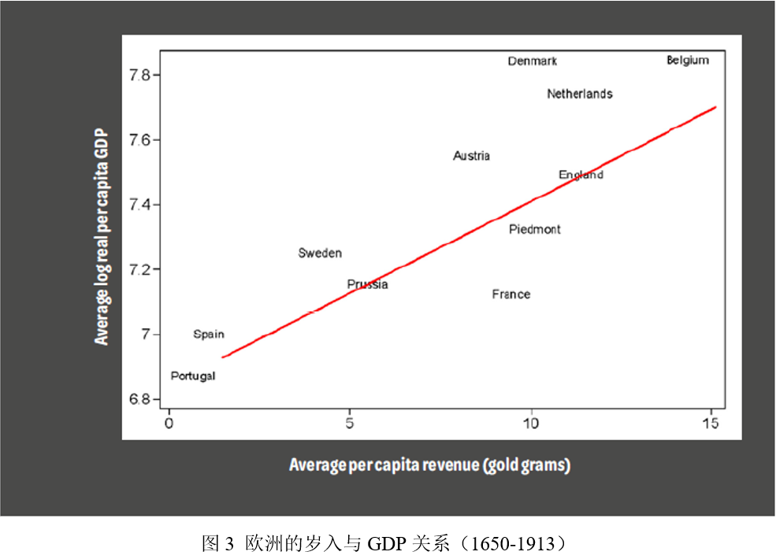
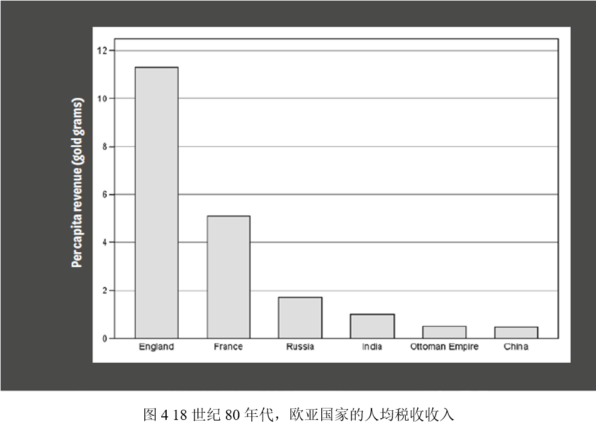

收录于合集
#历史政治学 58 个
#国家建构与国家发展 70 个
文献来源： Mark Dincecco, “State Capacity, Economic Development , and the Role of History,” APSA-CP Newsletter , XXIX, Issue 2, Fall 2019, pp.42-49.
作者简介： Mark Dincecco，密歇根大学政治学系副教授
导论
在当今世界，国家间的收入水平存在着巨大差异，而解释这些差异是社会科学研究面临的重要挑战（Acemoglu 2009,3-8）。此外，现代国家彼此之间的能力水平也大相径庭，而理解这一现象的原因则是社会科学研究的另一重要挑战（Besley and Persson 2011, 1-2）。当然，在这两大现象之间存在着引人注目的关系：图1展示了经济发展水平与国家汲取能力之间的显著正相关关系。

研究历史可以显著地增强我们对国家能力和经济发展之间关系的理解。首先，从基本层面来说，发展过程关注社会制度这一结构对政治和经济交互的激励作用（Acemoglu et al. 2005, 388; North 1990,3）。不仅如此，这一过程在本质上是流变的（Bates 2017, 2）。因此，发展研究包括了对长期横向制度变迁的分析。其次，从现实层面来说，只有少部分国家（如韩国）在第二次世界大战后跻身发达国家之列（Bates 2017, 2-3, 115-16）。立足历史，能确保我们从国家内部和跨国比较维度对发展的长期过程进行深度研究。再者，过去十年比较政治领域在建立原创历史数据库和使用严格统计方法上发生了技术革命——这部分归功于经济史领域已经发表的研究成果（Stasavage 2014a）。因此，历史研究能为比较政治中最深刻的辩论提供充分的解释。
在本文中，我利用自己建立的数据库（Dincecco 2017）从历史角度对国家能力和经济发展之间的关系做了简要的概述。首先，我建立了一个强调政府管理公众和限制自身权威面临挑战的框架。其次，我分析了西欧国家这一现代国家和现代经济增长发源地的长期发展。我认为，在这种情境下，国家能力越强，就越能推动经济发展。最后，我定义了基本的历史特征，这有助于让西欧国家的发展过程同世界上的其他地区区别开来。此外，我还描绘了这一研究主题新的发展趋势。
游戏规则
开门见山的说，国家拥有许多手段来推动经济发展，包括提供一个自由并且充满竞争性的市场，以用作内部交换、交通基建和大众教育的能力。我关注诺斯（North 1981,24）指出的作为“基本游戏规则”的国家能力，这包括法律和秩序、私有产权以及对外防御。通过减小无论是被小偷窃取、被掠夺型国家征用还是被敌对国家占领的“过度征用”可能，游戏规则中国家的那些规定能激励个人在物质资本、教育以及创新等那些能推动经济发展的领域进行私人投资。
有效国家
延续迈克尔·曼（Mann 1986,113）的观点，我从全国性政府能否实现其经济、财政以及其他政策目标的能力对国家能力做了定义。从有效国家出发，我认为政治安排保障了政府在理想状态下最好地完成这些政策目标。因此，我对有效国家的概念化遵照了麦迪逊的经典定义——要形成一个以人管理人的政府，其最大的困难在于，你首先必须使政府能够控制被统治者；其次必须迫使政府控制自己（Madison 1788,257）。包括福山（Fukuyama 2004,21-6），诺斯（North 2009,21-5）、贝斯莱和珀森（2011, 6-7）、阿西莫格鲁和罗宾逊（Acemoglu and Robinson 2012,79-81）在内的许多学者对有效国家的重要论述都强调了与麦迪逊所说相似的政治条件——这也增强了麦迪逊所述的可信度。
我从财税控制的角度将国家能力概念化为国家在众人之中嵌入权威的能力。财政能力是国家能力的中心（Levi 1988, 2）。进一步而言，历史上的财政数据可以系统性获得，使得跨时间跨地区的比较成为可能。具体说来，全国性政府必须具有政治权威和在其领土上运用标准税收制度来行使管辖职权的能力。没有财政的中央集权化，岁入将会因为地方在税收上的搭便车行为而减少，削弱了国家有效完成其政策目标的能力。西欧国家的财政中央集权化过程持续了数百年。因此，韦伯（Weber 1946,78）对国家的经典定义——垄断暴力对历史制度分析并没有多少价值，因为韦伯的国家观只反映了国家建构这一艰苦奋斗过程的结果，并不能反映这一过程的起点（Hoffman 2015, 306-8）。
政府具有嵌入众人之中的权威对于有效国家来说只是必要条件，而非充分条件。即使财政的中央集权化能保证国家汲取更多的税收，但并不能保证国家将这些新获得的税收用于推动经济增长。我将国家嵌入众人之中的能力概念化为两个部分。其中，概念的第一部分关注了涉及财政事务制度的公正性，这就意味着在政府内部存在一个机构——议会——这一定期（如每年）监管公共财政这一正式的、永久的权威。而概念的第二部分则聚焦了分配政治背后议会的财政角色：有效的监督者，这要求议会即便在利益集团的影响下也能有效运转。如果议会在这种条件下也能如此，那么其正式的财政权威将不会受到多少损害。从财政契约的逻辑出发，通过敦促政府提高有效财政开支的能力，议会对财政掌控的优越权将进一步提高国家对税收的汲取。
总之，如果国家能成功的将权力嵌入众人之中并且又能有效的控制自己，那么其就不应该只局限于汲取足够的税收来完成其政策目标，而且也应该能在发展事务上做出更有效的规划（与铺张浪费相反）。在此基础上，国家将变得更有效。
历史根基
我分析了西欧的国家能力和经济发展间的历史关系，我分析的起点是公元9世纪查理曼帝国的崩溃。查理曼帝国的分裂导致了西欧政治的长期碎片化，动荡和战乱成为这一时期的特征。诚然，战争是引发制度变迁的常见解释（如Tilly 1992,67-95）。为了保障用作军事的新税收，统治者愿意给予精英在地方上的自由（如城市自治），并建立全国性的议会，因此保证了纳税精英在决策中的正式地位。
相比其他形式的国家，中世纪的城邦具有更坚固的有效国家基础。由于规模狭小，城邦更能实现财政管理的中央集权化。与之相应，由于低廉的交流和传播成本，议会精英可以更频繁的会面。因此，与其他类型的领土国家相比，城邦能率先建立长期公共债务，能占据更有利的位置借到钱（Stasavage 2011, 77-93）。不仅如此，在欧洲的历史上，有效的地方治理已经与更大的技术创新和经济发展联系在了一起（Mokyr 1995; van Zanden et al. 2012; Stasavage 2014b; Cox 2017; Dittmar and Meisenzahl 2019）。
到了16世纪早期，许多民族国家拥有的领土边界与他们的现代边界相似。但是他们并不满足任何凌驾于有效国家的条件。与传统观点相左的是，民族国家的统治者更脆弱。由于政治碎片化和战争，他们经常让渡一部分政治控制权给地方精英来换取新的税收来源用以增强武备。然而，这一时期城邦采取例如讨价还价的行为对日后国家中央集权化的努力造成了阻碍。因此，早期民族国家被视为建立在传统地方制度上的“马赛克”拼图（Strayer 1970, 53）。在早期现代欧洲，由于发生了军事革命，导致在战争中获胜更加依赖于高税收（Gennaioli and Voth 2015）。然而地方制度的碎片化使得全国性政府难以汲取更多的税收。地方精英更倾向于反对全国层面的财政改革，这样会威胁到他们既得的税收利益，因为掌握财税权是自治的基础。由于国家的脆弱性，全国的统治者不可能简单的在他们辖下的领土内通过统一的税率来贯彻实行标准的财税制度，他们只能通过逐个地区的讨价还价来制定当地的税率。地方精英希望在上缴税收的时候搭便车，上缴的更少，让其他地区的精英来填坑。但是因为所有的地方精英都会这样做，全国性政府就只能对每人汲取很低的税收。
财政的中央集权化是一个长期且困难的过程。在1660年的法国，财政大臣科尔贝（Jean-Baptiste Colbert）推动了财政改革。他“成功地”把全法划分到“只剩”8个税区。然而，在当时法国最大的海关中心，仍然存在5个类别的地方税。
法国大革命后，财政的中央集权化才明显地推进开来。法国的军事征服是克服这一结构性挑战的关键动力。英格兰则颇为特殊：因为它的税收制度在诺曼征服后就达到了相当中央集权化的水平。
到了1815年拿破仑时代末，大多数民族国家仍未能实现议会和其他力量的均衡。尽管此时全国性的议会已经出现了，但是并没有掌管财政事务的优越权。除却地理规模原因之外，全国性的议会只在统治者发动战争时才召开。不仅如此，财政权威也被分割了，议会控制税收，而统治者却掌握了支配的权力。因此，议会也不情愿根据统治者的请求来批准新的资金，因为议会担心这有可能被统治者们浪费在军事冒险上。因此，为了绕开议会，统治者经常横征暴敛（比如强制贷款）。
19世纪，在财政的中央集权化发生后的数十年，议会和其他势力才在财政管理上实现了均衡。但对于这一点，英格兰和荷兰共和国是例外。因为英格兰是议会掌管财政的典型，1688年发生的光荣革命确立了英格兰议会对财政事务管辖的优越权，而荷兰共和国则通常被归类为宪政上的代表。
图2总结了早期现代欧洲国家的税收状况。首先，如上所述，直到19世纪，在全国范围内实行有效管理的国家才逐渐出现，英格兰（1800年之前灰色的方块）是例外。其次，在有效国家建立后，人均税收收入比实行旧制度的国家要高出不少。更多的税收汲取并非仅仅由经济增长带来。因为英格兰直到1750年之后才发生了工业革命（而欧洲大陆直到1870年才发生工业革命）。然而在1650年到1730年间，这些国家的人均税收收入增长了80%多。

通过更好的保障民族国家制定的游戏规则（连同自由和竞争性市场一起），有效国家得以推动经济发展。图3的线性关系图揭示了欧洲历史上政府汲取税收的能力和人均GDP之间存在显著的正相关关系。罗森塔尔（Rosenthal 1992 ）、阿西莫格鲁等（Acemoglu et al. 2011）、欧博文（O’Brien 2011）、考克斯（Cox 2016）以及丁切科和凯兹（Dincecco and Katz 2016）等人都从不同方面提供了全国范围内制度改革推动经济增长的证据。

全国范围有效国家的制度基础在于20世纪战争对国家的塑造。在20世纪中期之前，全国政府在住房、医疗、养老、失业和家庭补贴上的开支很低。然而在二战后，各国政府在这一方面的社会支出却迅速增长，它们通过对收入或财富进行直接税收，也就是通过所谓政府高水平的行政能力来实行再分配，以支持经济的增长。
为什么是欧洲？

图4表明历史上西欧国家的汲取能力远大于欧亚大陆的其他国家。在法国大革命的前夜，上述人均税收收入最高的国家是英格兰，大约为11金克。这一数额是其同期竞争对手法国的2倍多，远多于图中其他欧亚大陆国家人均税收收入之和。在俄罗斯，人均税收收入少于2金克，而中国、印度以及奥斯曼帝国，人均税收收入都在1金克以下。
两大历史特征有助于解释这些差异：高度的政治碎片化和较低的土地与劳动力的比例。比如到13世纪末，帝制时期的中国政府已经在广袤的疆域内建立了长期统治。因此，皇帝可以依赖对资源的强制汲取而非财政契约。不仅如此，财政的中央集权化意味着精英无法通过威胁改换门庭来要挟统治者。最后，与西方不同的是，中国长期遭受的外部威胁多是单向度的（主要来自于蒙古高原），这进一步削弱了精英在与君主议价中的筹码。基于以上几点，相比西欧，代议制（财政管理权的均衡）更不可能出现在中国，阻碍了日后中国国家的进一步发展（Dincecco and Wang 2018）。
与早期现代欧洲十分相似的是，撒哈拉以南非洲在族群和政治上是高度分裂的。然而与西欧（以及中国）不同的是，前殖民时代的撒哈拉以南非洲的土地与劳动力的比值相当高：例如在公元1500年的时候，当地每平方公里的土地劳动力数约为2人，然而西欧的这一比例则大约为10（Herbst 2000, 16）。在撒哈拉以南非洲，控制领土可能并不会受到挑战，因为对个体来说，迁移并开垦处女地并非难事。因此，对这一区域的政府来说在广袤的疆域内建立政治权威并且实行有效的行政管理就非常棘手，导致国家无法中央集权化。而跨大西洋的黑奴贸易和19世纪晚期欧洲帝国主义的扩张进一步阻碍了撒哈拉以南非洲伸张作为制度化权力的国家能力。
上文对情境特征的简要分析使得我们发现相比其他地区，历史上西欧国家的发展经验脱颖而出。此外，一批令人激动的研究强调了影响全球国家发展范式的其他原因，近来的研究常利用了单个国家内部地方的多样性，通常都是关注欧洲以外地区的情境。不同类型的精英能动者围绕公共政策的竞争是这些新的文献所强调的重要原因（Mares and Queralt 2015; Garfias 2018; Beramendi et al. 2019; Hollenbach 2019; Pardelli 2019）。另外一个原因是殖民时期的财政和政治结构（Suryanarayan 2017; Lee 2018; van Waijenburg 2018）。其他原因包括内战（Paglayan 2017）、统计的易读性（Lee and Zhang 2017; Brambor et al. 2019）以及农业技术的发展（Callen et al. 2019）。这些新的研究进一步提高了我们对国家能力的历史背景以及过去针对国家能力的投资和当下经济发展范式之间关系的理解。
翻译：杨端程 审校：赵德昊 编辑：康张城
【政文观止Poliview】系头条号签约作者